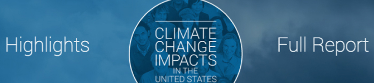
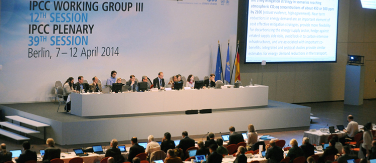
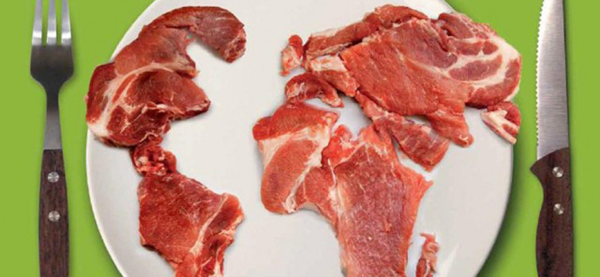

Image-based report - US National Climate Assessment 
May 2014 has seen the release of the third US National Climate Assessment (NCA) by the U.S. Global Change Research Program. For those who want to see what the latest scientific findings are telling us about our current and future climate conditions and what it means for the organisms of this world, then this is for you. If government documents with too many words aren’t your thing, check out this beautiful, image-based presentation of the report. It gives an interactive idea of the challenges we are facing and the measures that must be taken to keep our climate steady. No matter what part of the world you are from, it’s worth a look. US National Climate Assessment
Mitigation of Climate Change 2014 - IPCC Report 
To take personal action and also inspire others to engage against climate change, it is necessary much more them knowing about its causes and consequences. It is essential to focus on promoting, adopting and discovering effective ways to mitigate climate change. After four years of intense scientific collaboration, the IPCC Working Group III concluded its contribution to the Fifth Assessment Report, which reviews the current scientific knowledge on mitigating climate change. According to the IPCC team, the report aims to be comprehensive, objective and policy neutral. You can access a summary of 33 pages destined to policy makers or the complete final draft on the link: Mitigation 2014 - IPCC Report
The Meat Atlas 
Organized by the Heinrich Böll Foundation (Berlin, Germany) and Friends of the Earth Europe (Brussels, Belgium) the Meat Atlas is an intelligent overview to meat consumption and production around the globe. What before was considered only a matter of taste, eating meat or not eating it has many more implicit meanings. For some, not eating meat is a demonstration of concern about climate change, for others a demonstration of concern about the use of antibiotics or a concern about the treatment of animals during meat production. The world is getting more aware about its meat consumption and so should you. PDF: The Meat Atlas